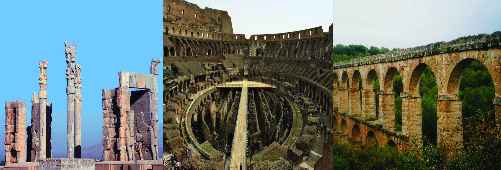
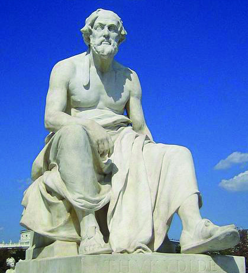
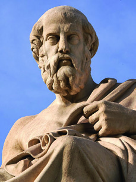
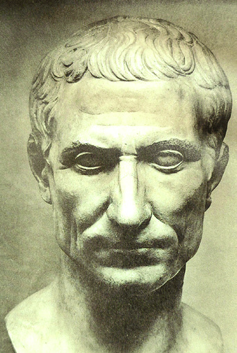
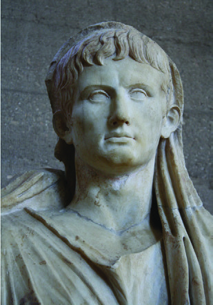
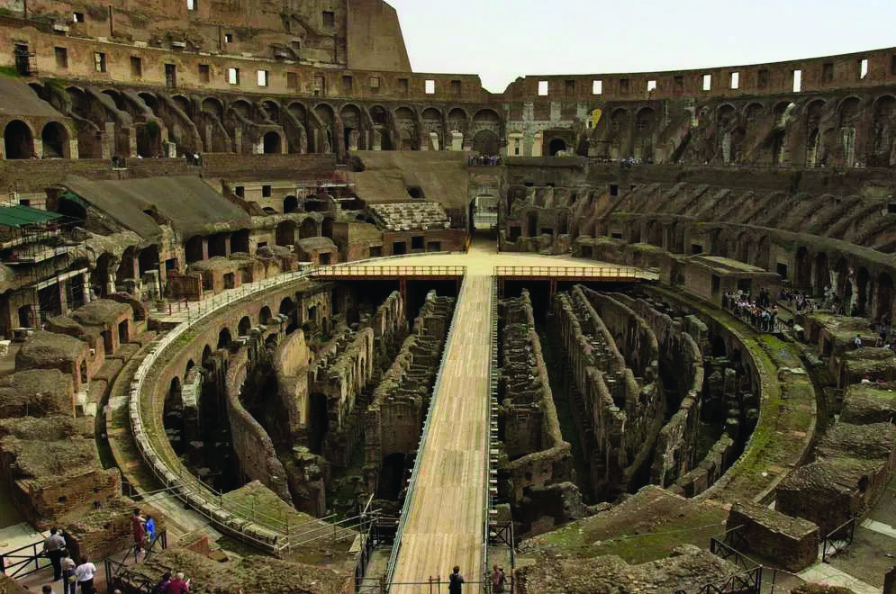
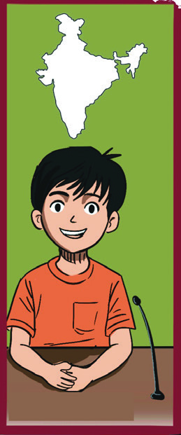
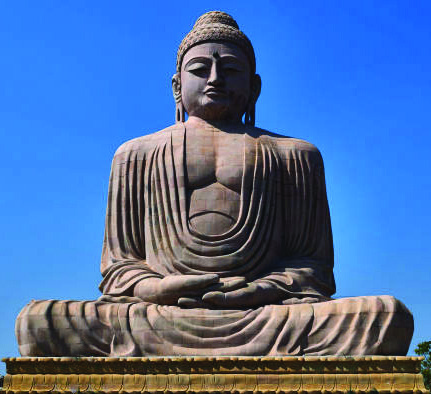

The children of Thingalmedu Government School are very happy. Everyone has reached
the conference hall to watch the broadcast of the Cultural Exchange Programme.
The headmaster began to speak.
''Dear children,
Have you heard about Cultural Exchange Programme? These programmes help us
understand the history and culture of different countries and regions. Every year, such
cultural exchange programmes are organized, bringing together student representatives
from various countries. This year, student representatives from Greece, Iran and Italy
participated in the programmes organised by India. Each representative shared the
history and culture of their respective country. Let’s explore them.''
2
Early States
Greece
Iran
Italy
India
Page 23


Page 24

Social Science Class VI
Social Science Class VI
24
Part I
Athena from Greece shared the details of her home country by displaying the Olympic
symbol.
You have listened to Athena's description. What are the details you have got from it?
• Olympics started in ancient Greece
•
•
•
Let's explore more about ancient Greece.
Greek city-states
In ancient Greece, villages were the main settlements. As agriculture and trade developed,
cities were formed. Eventually, a city and a number of surrounding villages came together
and began to transform into city-states. These city-states were known as 'Polis'.
Examine Map 2.1, identify and write down the major city-states that existed in ancient
Greece.
"Friends, are you familiar with this symbol? The Olympics, in which the
whole world enthusiastically participates today, originated in ancient
Greece. The democracy that originated in the Greek city-state of Athens
is our greatest contribution to the world. Greece is located in southeastern
Europe. My country is rich in geographical features such as isolated valleys
located high above the sea level, hills, and small mountains.
Page 25


25
Social Science Class VI
Social Science Class VI
Early States
•
•
•
•
Seas or high mountains separated these city-states of ancient Greece from each other.
So each city-state was isolated. Because of this, a uniform administrative system was
absent in ancient Greece. Athens and Sparta were the major city-states of Greece.
Athens
How do you choose your class leader and school leader?
• Through collective decision or voting.
What is the name of the system by which the people elect their rulers in this way?
•
The initial form of democracy originated in the Greek city-state of Athens. All men having
Map 2.1 - Important city- states of ancient Greece
Map 2.1 - Important city- states of ancient Greece
Map not to scale
Map not to scale
Greece
Thebes
Corinth
Athens
Sparta
Page 26


Social Science Class VI
Social Science Class VI
26
Part I
citizenship in Athens participated
in electing rulers and making laws.
Women, slaves and foreigners did not
have citizenship status.
It was during the time of Pericles that
democracy began to expand in Athens.
The political body of Athens was known
as the 'Assembly'.
Now let's get familiar with other features
of Athens.
• A system of education that gave
importance to art and culture
• Two years of compulsory military
service for boys
• A strong navy and military
Sparta
Unlike Athens, Sparta had an aristocratic
rule. The education system that existed in Sparta emphasized traditional values and military
training. In Sparta, boys were required to serve in the military for twenty-three years.
The Citizens of Athens
Not everyone was considered a citizen
in Athens. To get citizenship, there
were conditions such as a person
had to be a free man and have both
parents as Athenians.
Pericles
It was during the reign of Pericles, one of
Athens' most powerful rulers, that Athens
achieved a prominent status among the Greek
city-states. Pericles maintained the idea that
power should be shared among all citizens
rather than being concentrated in a single
individual.
The Persian Empire, which was hostile to the Greek city-states, was invaded and
conquered by a combined army of Athens and Sparta. These wars are known as the
Greco-Persian Wars.
But later, Sparta, which became hostile to Athens, formed an alliance with certain city-
states and waged war against Athens. In this war, known as the Peloponnesian War,
Sparta emerged victorious.
Present the characteristics of Athens and Sparta in dialogue
form.
............................................
............................................
....................................
....................................
Our country is known
as the birthplace of
democracy.
.
...................................
...................................
.........................
.........................
Page 27






27
Social Science Class VI
Social Science Class VI
Early States
Marathon Race
During the Greco-Persian War, the Greeks and the Persians fought at
Marathon, located about 26 miles from Athens. The Greeks emerged
victorious in this battle. A messenger was sent to Athens to deliver the
news of their triumph. After running the entire distance, he joyfully
shouted, "Rejoice, we have won!". As he ran a very long distance, he died
immediately. In memory of this event, the long-distance race came to be
known as the Marathon Race.
Herodotus and Thucydides
The Histories is a famous work based on the Greco-
Persian Wars. It is considered to be the first historical
work in the world. It was written by Herodotus, who is
known as the Father of History. The Peloponnesian
War between Sparta and Athens was recorded by
the historian Thucydides. The name of this work is
History of the Peloponnesian War.
Herodotus
Herodotus
Thucydides
Thucydides
Greek Philosophers
Socrates, Plato, and Aristotle were the major Greek philosophers who have influenced
the world.
Greek Philosophers
• Emphasized that
“knowledge is virtue”
• Propagated ideas
through the method
of logical discussion
(Socratic method)
• A student of Plato at
the 'Academy'
• Established the study
centre called the
'Lyceum'
• Author of the book
'Politics'.
Socrates
• Disciple of Socrates
• Founded a study
centre called the
'Academy'
• Famous work 'The
Republic'.
Plato
Aristotle
Page 28


Social Science Class VI
Social Science Class VI
28
Part I
Details about ancient Greek culture are obtained from Homer's epic poems, the Iliad and
the Odyssey.
''Friends... Our country, Iran has Persian cultural heritage. The Persian
empire was the most important empire that existed at that time. The
Persian empire was a mixture of diverse
cultures, languages and traditions as different
geographical territories were part of this
empire. Persepolis was the capital of this
empire''.
The Iliad is the story of
the War, waged by the
Greeks against the city
of Troy. The Greek army
could not win even
after wars that lasted for
years. They built a large
wooden horse. The best
Greek warriors were
made to hide inside the
horse, and it was left on
the way to Troy city. The
rest of the army retreated.
The Trojans, believed
the wooden horse to be a
gift, from the Greek who
accepted defeat. High on
victory, the Trojans brought
the wooden horse inside the
city. At night, when all were
asleep, the Greek soldiers
came out from the horse.
The Greek ships which were
hiding in the sea, rushed to
Troy. The city of Troy was
destroyed completely by
morning.
The Iliad
Persian Empire
You have listened to Jahan's description who represented Iran in the cultural exchange
programme.
What are the ideas that we get from Jahan’s description?
Persepolis
Persepolis
Create a wall magazine with pictures and information about Greeks who
contributed to history, philosophy, and literature.
Page 29

29
Social Science Class VI
Social Science Class VI
Early States
•
•
•
The prominent rulers of the Persian Empire were Cyrus, Darius I and Xerxes.
The Persian
Administrative
System
The vast empire was divided into several satrapies
(provinces) for administrative convenience
Founded by
Zoroaster
Believed in one God
called Ahura Mazda
Zend-Avesta was the
religious text
Zoroastrian Philosophy
Zoroastrian Philosophy
The Zoroastrian philosophy originated in Persia.
Prepare questions and answers to organize a quiz on the Persian empire and
its culture.
Roman Empire
''Hi friends...my name is Elena. My country Italy was part of the Roman
Empire. The city of Rome is considered to be the birthplace of Western
civilization. The expression 'all roads lead to Rome' itself indicates the
importance of this empire. In the early days, Rome was a monarchy.
However, in the course of time, rebellions arose against the rulers who
were not concerned about the people and the monarchy ended in the
6th century BCE. Then a new system of government called the 'Republic'
came into existence in Rome. The rise of the 'Republic' was a major
turning point in the history of ancient Rome''.
These 'satrapies' were under governors known as
'satraps'
These satraps enforced the laws and tax systems of
the king in the satrapies
Page 30


Social Science Class VI
Social Science Class VI
30
Part I
Note down the information got from Elena’s description of ancient Rome
• Rome is considered the birthplace of western civilization
•
•
•
In the Roman Republic instead of a king, governance was entrusted
to elected officials known as consuls. In 1st century BCE, Julius Caesar
who held the office of consul, ended the republican system and assumed
power as a dictator.
Fig 2.1
Julius Caesar
Fig 2.2 Augustus
It was during the reign of Augustus that the Roman Republic transitioned
completely into Roman empire. With this the emperor became the
supreme ruler.
Cultural Contributions of Rome
Contributions of Rome remain in areas, such as language, literature, art and urban planning.
The Aqueducts which are arched canals built to supply water and vast and open venue
called Colosseum are the cultural contributions of Rome.
Features of Roman
Empire
The Roman emperors were known as 'Princep' (the first
citizen)
The system of governance led by the Princep was called the
'Principate'
Augustus established the 'Principate' governing system
There was a strong army that did service for regular wages
The Roman Empire was a vast empire that spread across
Europe, North Africa, and Western Asia
Page 31




31
Social Science Class VI
Social Science Class VI
Early States
Fig 2.4 Colosseum
Fig 2.3 Aqueduct
State Formation in India
Vivan represented India in the cultural exchange programme. Let's listen to Vivan's
description.
Make a note on the different administrative systems that existed in Rome.
''Hello, I'm Vivan, representing India in this programme. You might have
heard about the Harappan civilization that flourished along the Indus
River and its tributaries. After the decline of the Harappan civilization,
the Aryans settled in the Sapta Sindhu region, the north-western part of
Indian subcontinent around 1500 BCE. We get the information about
them from the Vedas written during that period. The period when
Vedas were written is referred to as the Vedic Age. Later, the Aryans
migrated from the “Sapta Sindhu” region to the banks of the Ganges
and its tributaries. The discovery and use of iron led to the expansion
of agriculture and increased production. Surplus production led to the
development of trade centres. These trade centres later evolved into
urban centres. Janapadas formed centred around these urban centres''.
Based on Vivan’s description identify the historical pathways that indicate the growth of
"Janapadas" and complete the worksheet given below.
Page 32


Social Science Class VI
Social Science Class VI
32
Part I
Discovery and use of
Discovery and use of
iron.
iron.
Increase in
Increase in
production
production
Janapadas
Janapadas
Trade Centres
Trade Centres
.......................................
.......................................
............................................
............................................
............................................
............................................
From "Janapadas" to “Mahajanapadas"
You have seen that in ancient India,
"Janapadas" emerged around urban
centres. Fertile river banks and abundant
forests made certain "Janapadas" more
powerful. The stronger Janapadas which
conquered neighbouring Janapadas evolved
into “Mahajanapadas". This period of
Mahajanapadas is known as the 'Second
Urbanization' in India.
Magadha Rose to Prominence
In the 6th century BCE, among the sixteen
Mahajanapadas,
Magadha
became
a
prominent force.
Observe Map 2.2 and find out Magadha's
location.
Janapadas
'Janapada' means 'the land
where people reside.' People
who established agricultural field
and residential zones in resource
rich areas started to settle there.
This is how "Janapadas" were
formed.
The Sixteen “Mahajanapadas"
Kamboja, Gandhara, Magadha, Anga,
Vajji, Malla, Kashi, Vatsa, Koshala,
Chedi, Panchala, Ashmaka, Avanti,
Shurasena, Kuru, and Matsya were the
sixteen Mahajanapadas.
Worksheet
Page 33

33
Social Science Class VI
Social Science Class VI
Early States
Let's examine the factors that helped Magadha's emergence as a prominent Mahajanapada:
Progress in agriculture
and trade
Fertility resulting from
proximity to the Ganges
and its tributaries
Presence of iron-ore
Manufacture and use of
iron weapons and tools
Powerful rulers and
strong military
Factors that
contributed to
the growth of
Magadha
Initially, Rajagriha (Rajgir in Bihar) and later Pataliputra
(Patna) served as the capitals of Magadha.
The Maurya Kingdom
In 321 BCE, Chandragupta Maurya defeated Dhana
nanda, the ruler of Magadha and captured power.
It was Chandragupta Maurya who established the Maurya
kingdom by annexing nearby regions to Magadha. It was
• Bimbisara
• Ajatasatru
• Mahapadma Nanda
• Dhanananda
Map 2.2 : Magadha- Prominent Power among the Mahajanapadas
Prominent Rulers
of Magadha:
Magadha
Map not to scale
Page 34


Social Science Class VI
Social Science Class VI
34
Part I
Kautilya, also known as Chanakya, his minister who helped Chandragupta Maurya
to transform Magadha into an expansive kingdom and in establishing an efficient
administrative system.
Asoka, the eminent Mauryan ruler, expanded the kingdom further by conquering regions
like Kashmir and Kalinga (present-day coastal Odisha). Observe the vastness of the
Maurya kingdom from Map 2.3.
Philosophies of Ancient India
We have seen the state formation in ancient India. Now, let us become familiar with some
philosophies that emerged during this period.
Jainism
Jainism was a philosophy that emerged in India during the 6th century
BCE. It was propagated by Vardhamana Mahavira. He was the 24th
Tirthankara of Jainism. He is also known as 'Jina,' meaning "the
conqueror of worldly desires."
Kautilya's
Arthashastra
We get information about
the Maurya kingdom from
“Arthashastra” written by
Kautilya. This work describes
how a king should govern
and expand his kingdom. It
offers detailed descriptions
on protecting the state from
invasions, collecting taxes,
and so on.
Discuss and prepare a note on how Magadha which was a Mahajanapada,
grew into powerful Maurya kingdom.
Map 2.3 - The Maurya kingdom during Asoka’s rule
Fig - 2.5
Vardhamana Mahavira
Vardhamana Mahavira
Map not to scale
Kalinga
Page 35



35
Social Science Class VI
Social Science Class VI
Early States
Ideals of Buddhism
• Do not harm others
• Do not lie
• Be honest
• Do not covet others' wealth
Analyse the common characteristics in the ideals of Jainism and
Buddhism.
Buddhism
Buddhism was another major philosophy that emerged
in ancient India. It was founded by Gautama Buddha.
His original name was Siddhartha. After attaining
enlightenment at Bodh Gaya in Bihar, he came to be
known as Gautama Buddha.
All things have life
No living things should be
harmed (Ahimsa)
Do not steal,
do not lie
Tirthankaras
The term "Tirthankara"
means one who
has attained wisdom
through asceticism.
According to
Jain beliefs, there
were twenty-four
Tirthankaras.
Fig - 2.6
Gautama Buddha
Ideals of
Jainism
Practice Right Belief, Right
Knowledge, Right Action
(Tri-Ratna)
Page 36


Social Science Class VI
Social Science Class VI
36
Part I
From the 6th century BCE onwards new perspectives began to form in all domains of
human life across the world. In this lesson, we discussed the political and philosophical
developments that took place in different parts of the world during this period. We
have also become familiar with the changes that happened in the fields such as state
formation, administrative systems, and cultural advancements. In the following lessons,
we will further explore the characteristics and unique features of different states and their
administrative systems.
Charvaka Philosophy
Another philosophy that existed in ancient India was Charvaka Philosophy.
It was also known as Lokayata. Charvaka philosophy gave importance to
the principle of enquiry rather than that of belief.
Extended Activities
• Mark the countries—Greece, Italy, Iran, and India—on a world map and include
it in your Social Science Observation Book.
• Collect more information about the state formation in the ancient world and
prepare either a magazine or a digital album on the topic.
• Collect stories related to Vardhamana Mahavira and Gautama Buddha and
present it in your Social Science Club.
• Observe an atlas and locate Rajgir and Patna in modern India. Mark them on a
map of India, and add it to your Social Science Observation Book.